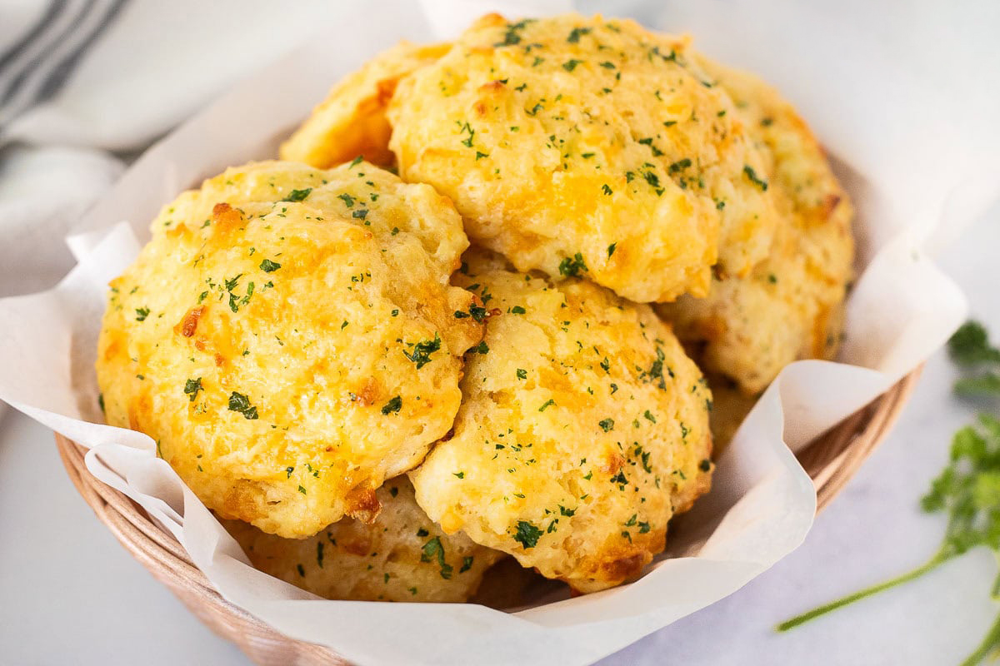

Сырные печеньки Чеддер Бэй

- 2 чашки муки (230 мл)
- 1 ст.л. разрыхлителя
- 1 ст.л. сахара
- 1 ст.л. чесночного порошка
- 3/4 ч.л. соли
- 115 гр. сливочного масла
- 230 мл молока
- 230 гр. сыра чеддер
Разогреть духовку до 230°C.
В маленькой миске растопить 115 гр. сливочного масла в микроволновке (около 30 секунд) до полного растворения. Отставить в сторону.
В большой миске смешать 2 чашки муки (по 230 мл), 1 ст.л. разрыхлителя, 1 ст.л. сахара, 1 ст.л. чесночного порошка и 3/4 ч.л. соли. Взбить венчиком до однородности.
Добавить растопленное масло и 230 мл молока, аккуратно перемешать венчиком, пока вся мука не станет влажной. Не перемешивать слишком долго.
Натереть на крупной терке 230 гр. сыра чеддер и аккуратно вмешать ложкой в мучную смесь.
Выложить тесто большими ложками на противень, покрытый пекарской бумагой. Выпекать 12-14 минут, пока печенье не станет золотистым.
 Назад к списку рецептов
Назад к списку рецептов